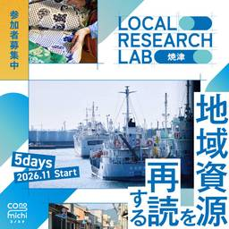
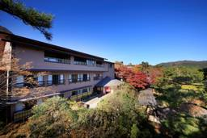

トラベルボイス
https://www.travelvoice.jp
観光産業の最新情報やトレンドを伝える、読者数No.1の専門ニュースメディア。厳選ニュースのほか、分析データや識者によるわかりやすい解説コラム記事も満載。その日のニュースをコンパクトにまとめたメールマガジンも好評。
フィード
旅行会社向けの、団体に特化した飲食店の予約サービス「団タメ！」がインバウンドでも好調、ベジタリアンやハラルも対応
トラベルボイス
旅行会社専用の飲食店団体予約サービス「団タメ！」。インバウンド市場の拡大に合わせて、そのビジネスも成長してきた。デジタルの力でマッチング。その強みと今後の展望を聞いてきた。
5時間前
世界で人気高まるアジア料理、レストラン売上は年平均11％増、冷凍・チルド食品ではシェア38％、日本食は世界4位
トラベルボイス
ユーロモニターの調査によると、2020年から2025年にかけて、アジア系レストランの売上高がレストラン業界全体を上回るペースで増加した。
9時間前
GREEN×EXPO 2027、開幕半年前でイベント概要を発表、59カ国・機関のナショナルデー、全国の祭りやスポーツも
トラベルボイス
2027年3月に横浜で開幕するGREEN×EXPO 2027。開催半年前の記者発表会で施設愛称や花の見頃、59カ国・機関のナショナルデー、全国の祭り、スポーツイベントなどを発表した。JTBやHIS、JAL、鉄道各社など観光・交通分野の大型協賛者も。
10時間前
国内初の「完全無人タクシー」を2027年中に商用化へ、GO・Waymo・日本交通、都内で段階的に100台規模を計画
トラベルボイス
GO、Waymo、日本交通の3社は、東京での自動運転タクシー商用化に向け提携した。2027年中にレベル4の完全無人走行による国内初の商用サービス開始を目指し、100台規模の車両運行を計画している。
16時間前
山梨県甲州市、楽天・おてつたびと関係人口創出、楽天市場に「甲州市ファンクラブ」を開設
トラベルボイス
おてつたびは、楽天グループおよび山梨県甲州市と連携。「楽天市場」内に「甲州市ファンクラブ」を開設し、地域ファン（関係人口）を創出していく。
16時間前

静岡県焼津市、JR東海と「ふるさと住民登録制度モデル事業」、交通・宿泊費を一部補助、利用データを検証
トラベルボイス
静岡県焼津市は、JR東海と「ふるさと住民登録制度モデル事業」を実施。「共創人口」の創出し、「地域づくりの担い手」となる新しい関係性の構築を目指す。
16時間前
MGM、中国・深圳に新ホテル開業、グレーターベイの海上玄関口に全298室、MICE施設は3000平方メートル超
トラベルボイス
「MGM深セン・プリンス・ベイ（MGM Shenzhen Prince Bay）」が2026年9月10日に開業。広東・香港・マカオのグレーターベイエリア（GBA）のMGMネットワークが拡充。
16時間前

森トラスト、箱根強羅に新ホテル、2026年11月開業へ、全34室、2種の源泉かけ流し、オールインクルーシブ
トラベルボイス
森トラスト・ホテルズ＆リゾーツは、新ホテル「WAKAN箱根強羅」を2026年11月に開業。2種の温泉や和膳などを気軽に楽しめるサービスを、オールインクルーシブスタイルで提供。
16時間前
老舗旅館20代目が語る日本ならではの「ラグジュアリー」とは？ 富裕層に選ばれるための会話と豊かな時間
トラベルボイス
宮城・湯主一條の20代目当主が語る富裕層向けのおもてなしの真髄。全室スイートの新施設展開と、差別化のカギとなる「マニュアルに頼らない会話力」とは？
18時間前
日本政府観光局が推進する「ガストロノミーツーリズム」、専門家が語る地元食材の再発掘と、「語りの意味づけ」設計の重要性
トラベルボイス
日本政府観光局（JNTO）は、「第29回JNTOインバウンド旅行振興フォーラム」でガストロノミーツーリズムについてパネルディスカッションを開催。有識者が地域資源の再発掘と語りの意味づけ設計の重要性について語った。
18時間前